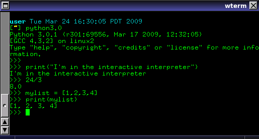
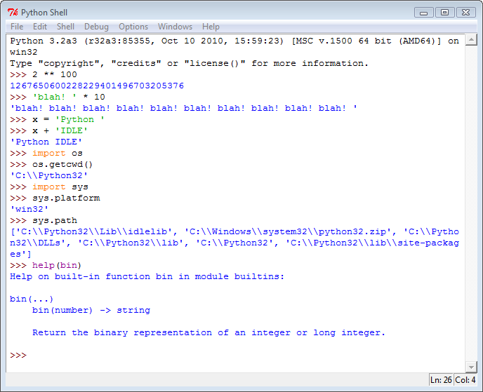
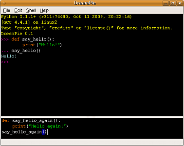
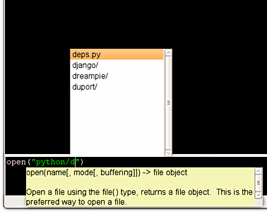
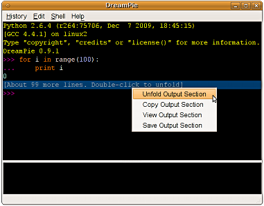
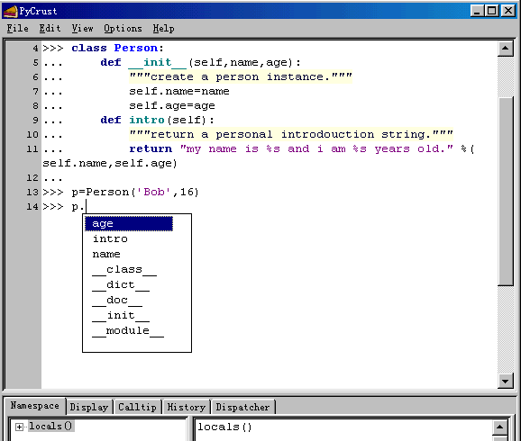
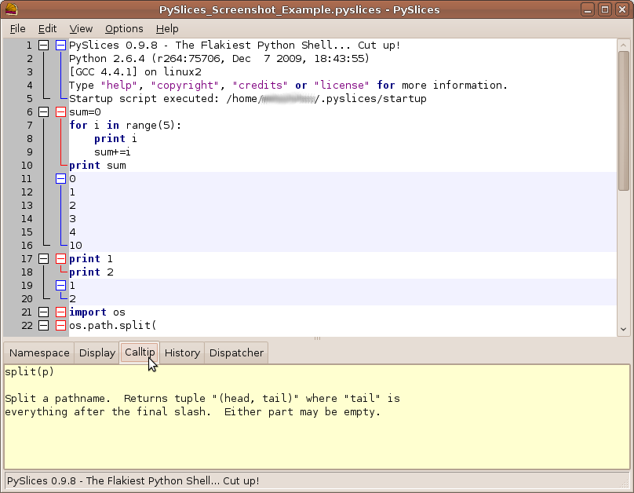

#+TITLE: 几个Python Interactive Shell
#+OPTIONS: img:t
介绍几个Python Interactive Shell (Part I)
@python
用Python编程，免不得需要做些实验，你可以python interactive shell 里面试一下某个表达式是否正确，某个包
是怎样使用的，用dir(obj)看看一个对象都有些啥属性，用help(foo)查看帮助。。。
另外一方面，matplotlib这类扩展（或者说应用？）更是以interactive shell作为主要交互界面了。
#+begin_html
<img src="http://www.annedawson.net/Idle_image022.jpg" border="0"/><p>
#+end_html

{kind=link}
不过python自己的interactive shell 还是弱了一点，比如没有代码补全，没有语法高亮，不能一次选择历史里面
的多行进行重用。下面简单介绍几个增强型的Python Interactive Shell.
IDLE
http://wiki.python.org/moin/IDLE
#+begin_html
<img src="http://www.bogotobogo.com/python/images/python_modules_idle/idle.png" border="0"/>
#+end_html

{kind=link}
IDLE 是python的自带IDE（是的，它有编辑器、有调试器、还有这里讨论的interactive shell功能)，采用tk编写
界面，虽然功能不是太强，但好在自带，并且跨平台，可以救急用用。
IDLE里面的interactive shell相对终端版本(就是不带参数运行python，或者带-i参数执行时出现的shell)而言，
多了几个功能:
- 代码高亮
- 代码补全(按tab键出现)
- 显示函数说明，比如输入"os.path.isfile("后它会以提示框现实os.path.isfile这个函数的signature和文档
BTW: idle的shell里重用历史记录的快捷键是Alt-p(上一条)和Alt-n(下一条) —— Emacs用户表示这很自然 :-)。
又: 有个IdleX项目， 为IDLE提供了一些增强扩展和插件，在编辑、执行、帮助、shell各方面都有增强，有兴趣的
可以试试。下面是与shell相关的增强:
- Terminal-like behavior for Shell. Cursor stays in prompt and up/down arrow keys cycle the
- Persistent history of Shell commands across sessions.
- Paste and run multiple lines in the shell.
- Non-blocking interactive GUI development for Tkinter, GTK, Qt, Qt4, PySide, wxPython
- Matplotlib support for interactive figures when using the subprocess.
- Clear Shell Window without restarting.
- Capture large output and display it as an expandable button.
DreamPie
http://dreampie.sourceforge.net/
#+begin_html
<img title="The DreamPie window" src="http://dreampie.sourceforge.net/screenshot1.png" border="0"/><br><br>
<img title="Function documentation and filename completion. There's attribute completion too, of course!"
src="http://dreampie.sourceforge.net/screenshot2.png" border="0"/><br><br/>
<img title="Long output sections are automatically folded."
src="http://dreampie.sourceforge.net/screenshot6.png" border="0"/><br>
#+end_html
{kind=link}
{kind=link}
{kind=link}

DreamPie 的功能定位比较单一，没有IPython里面的并发、shell命令等功能，它只是要改善一般使用interactive
shell时候的不便: 多行输入/重用不方便、没有代码补全，没有即时的函数帮助(calltip)等。
dreampie有几个特色功能:
- 支持代码高亮，随着你的输入自动变色，而且支持色彩主题（缺省提供dark/light两套，要自己配置也可以）;
- 在界面下方提供了一个多行输入框，你可以方便地编辑多行输入，比如回到上一行去修改;
- 如果一段输出比较长，它可以将它折叠起来，方便你查看前面的内容;
- 支持Python/Jython/IronPython;
- 可以将整个交互过程保存为一个漂亮的HTML，颜色/缩进都很好地保留下来了——而且你下次还可以加载这份历
- 如果你的语句进入了死循环，或者因为I/O等原因无法完成，你可以用Ctrl-C中止它，但你的会话不会就此中
wxpython里面的PyShell, PyCrust和PyAlaMode
这是wxpython里面自带的工具，其实PyCrust = PyAlaCarte + PyFilling, 而PyAlaMode = PyAlaCarte +
PyShell + PyFilling。其中PyShell是python shell交互功能，PyAlaCarte是个简单的Python代码编辑
器，PyFilling是个对象察看器。所以PyAlaMode就是相对PyCrust多了文件编辑的功能。
#+begin_html
<img src="http://wiki.woodpecker.org.cn/moin/WxPythonInAction/ChapterFour?action=AttachFile&do=get&target=w4.6.gif" border="0"/><br>
<img src="http://wiki.woodpecker.org.cn/moin/WxPythonInAction/ChapterFour?action=AttachFile&do=get&target=w4.8.gif" border="0"/>
#+end_html

在代码高亮、自动补全、自动显示帮助方面，wxpy跟其它python shell差不多，不再多数。唯一需要介绍的是
PyCrust/PyAlaMode下方面板里面的几个标签:
{kind=link}
{kind=link}
- Namespace 标签的功能相当于dir()函数，它列出当前python shell名字空间里面的所有对象，以及它们的属性;
- Display 标签的功能相当于print()函数，它会以字符串方式展示出一个对象，而且是调用pprint模块来显示的，用法是在shell里面想使用print()的时候改用pp()这个函数，该对象就会在这里列出结果了;
- Calltip 标签页显示一个函数的signature和帮助，这个函数是你在shell里最后一次输入的函数名
- History 标签页列出在shell中所输入的全部历史
- Dispatcher 标签页——我不太清楚 :-(
参考文档:
- 官方文档: The Py Manual （写得太简单了，你会失望的）
- 用PyCrust使得wxPython更易处理 ，来自wxPython in Action一书中相关章节，中文的。
PyCrust的改进版本: PySlices
http://code.google.com/p/wxpysuite/
http://wxpysuite.googlecode.com/svn/trunk/PySlicesScreenshot.png

这是PyShell/PyCrust的改进版本:
{kind=link}
- PySlices改进了多行输入的方式，一般的python shell只是在class/def/if/for这类语句后面呈现多行输入方式，等你输入下一行。但PySlices缺省是多行输入，你可以在输入多行后，按Ctrl-Enter一并提交执行。也可以切换到旧方式(在菜单Options->Settings->Enable Shell Mode)。
- PySlices还从IPython学了几个功能过来:
- 函数调用的括号是可选的，比如"dir a"等同于"dir(a)"
- 支持一些常用unix shell命令，比如pwd, cd, ls
- 支持调用外部命令，只要命令行前面添加!就可以了，比如"!grep --help"
- 多行的输入/输出可以折叠起来，跟DreamPie差不多
最后说一下安装，从wxPython的ChangeLog看，应该是在2.8.11就合入了wxPython，但在Debian的安装包里又没有看到，很奇怪。所以可以先安装python-wxtools 包，然后从http://code.google.com/p/wxpysuite/downloads/list 这里下载，然后将PySlices*.*这几个文件提取出来即可（需要简单修改一下两个py文件，将 ="import wx_py as py"= 修改为 ="import wx.py as py"= ; 如果你不安装python-wxtools的话，也可以直接全部使用这里下载的，那就用不着修改了)。
{kind=link}
{kind=link}
{kind=link}
{kind=link}
{kind=link}
{kind=link}
{kind=link}
{kind=link}